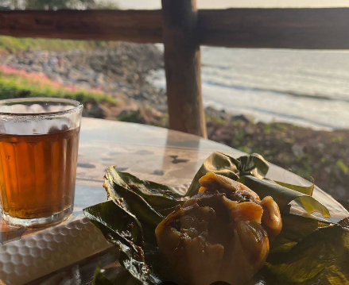

Kallummakkaya Fry
AT THE COUNTERThalassery’s beloved mussel, crisp and full of coastal flavour.
Little plates, local favourites, and something warm to sip while the sky does its golden-hour thing. Prices and availability are best checked at the counter.

Our menu is rooted in Malabar snack-time: crisp, savoury, a little sweet, and always better shared. Pair your plate with hot mann cup chaya or a cool lime drink.
Call ahead ↗Thalassery’s beloved mussel, crisp and full of coastal flavour.
A stuffed mussel favourite with a satisfying Malabar bite.
Rice-coated mussels, seasoned and fried until golden.
A hearty layered snack, best enjoyed fresh and warm.
Flaky layers around a savoury filling. A proper teatime treat.
Sweet banana, soft centre, and a golden fried outside.
Spiced, crisp and just right with a glass of tea.
A quick, savoury bite for that sunset-side snack craving.
A golden local snack with a comforting homemade feel.
Hot tea in a clay cup. A little ritual worth keeping.
Bright, aromatic and made for an easy evening.
Chilled, creamy and ready when the coastal air is warm.
A nostalgic cooler with a little extra energy.
Fresh, zippy sips for the salt-air kind of thirst.